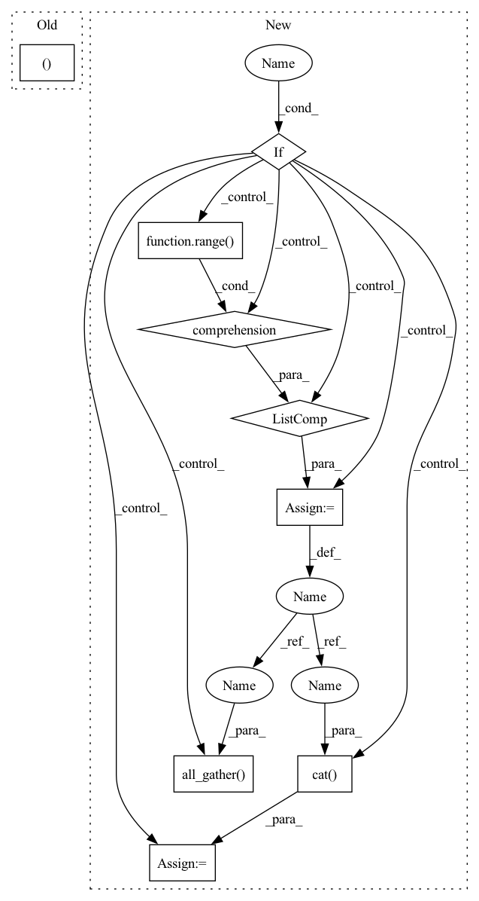

Pattern ID :41828
Before Change
hidden_states, present = self.gpt_neox(
input_ids, position_ids, cu_seqlens, max_s, past_key_values
)
return self.embed_out(hidden_states), present
After Change
)
logits = self.embed_out(hidden_states)
if self.gpt_neox.tp_embeddings :
// Logits are sharded, so we need to gather them
world_logits = [torch.empty_like(logits) for _ in range(self.world_size)]
torch.distributed.all_gather(world_logits , logits, group=self.process_group)
world_logits = torch.cat(world_logits , dim=1)
return world_logits, present
return logits, present
In pattern: SUPERPATTERN
Frequency: 3
Non-data size: 9
Instances Fragment ID: 117236601
Project Name: huggingface/text-generation-inference
Commit Name: 9987960062e40de2deae030ab7e4ad6f57de0b20
Time: 2023-04-09
Author: olivier@huggingface.co
File Name: server/text_generation_server/models/custom_modeling/flash_neox_modeling.py
M Class Name: FlashGPTNeoXForCausalLM
N Class Name: FlashGPTNeoXForCausalLM
M Method Name: forward(6)
N Method Name: forward(6)
M Parent Class: FlashGPTNeoXPreTrainedModel
N Parent Class: FlashGPTNeoXPreTrainedModel
M File Name: server/text_generation_server/models/custom_modeling/flash_neox_modeling.py
N File Name: server/text_generation_server/models/custom_modeling/flash_neox_modeling.py
M Start Line: 671
M End Line: 671
N Start Line: 674
N End Line: 683
Before Change
num_samples = self.num_save_images
if num_samples:
shape = (num_samplesAfter Change
if not (e + 1) % self.image_intv and num_samples and image_dir:
x = self.sample_fn(noise)
if self.distributed :
// balance GPU memory usages within the same process group
x_list = [torch.zeros(shape, device=self.device) for _ in range(self.world_size)]
dist.all_gather( x_list, x)
x = torch.cat( x_list, dim=0)
x = x.cpu()
if self.is_main:
save_image(x.cpu(), os.path.join(image_dir, f"{e + 1}.jpg"))
if not (e + 1) % self.chkpt_intv and chkpt_path and self.is_main: Fragment ID: 117236602
Project Name: tqch/ddpm-torch
Commit Name: ae680b0f9dd35ff43532d9a7e0106948ba7ca4ba
Time: 2022-11-12
Author: tqch2020@gmail.com
File Name: ddpm_torch/utils/train.py
M Class Name: Trainer
N Class Name: Trainer
M Method Name: train(4)
N Method Name: train(4)
M Parent Class:
N Parent Class:
M File Name: ddpm_torch/utils/train.py
N File Name: ddpm_torch/utils/train.py
M Start Line: 151
M End Line: 184
N Start Line: 164
N End Line: 207
Before Change
hidden_states, present = self.transformer(
input_ids, position_ids, cu_seqlens, max_s, past_key_values
)
return self.lm_head(hidden_states), present
After Change
)
logits = self.lm_head(hidden_states)
if self.transformer.tp_embeddings :
// Logits are sharded, so we need to gather them
world_logits = [
torch.empty_like(logits) for _ in range(self.transformer.tp_world_size)
]
torch.distributed.all_gather(
world_logits, logits, group=self.transformer.process_group
)
world_logits = torch.cat( world_logits, dim=1)
return world_logits, present
return logits, present Fragment ID: 117236598
Project Name: huggingface/text-generation-inference
Commit Name: 880a76eed5f058043367d9643be8a498b286bde2
Time: 2023-04-12
Author: olivier@huggingface.co
File Name: server/text_generation_server/models/custom_modeling/flash_santacoder_modeling.py
M Class Name: FlashSantacoderForCausalLM
N Class Name: FlashSantacoderForCausalLM
M Method Name: forward(6)
N Method Name: forward(6)
M Parent Class: nn.Module
N Parent Class: nn.Module
M File Name: server/text_generation_server/models/custom_modeling/flash_santacoder_modeling.py
N File Name: server/text_generation_server/models/custom_modeling/flash_santacoder_modeling.py
M Start Line: 355
M End Line: 355
N Start Line: 526
N End Line: 540